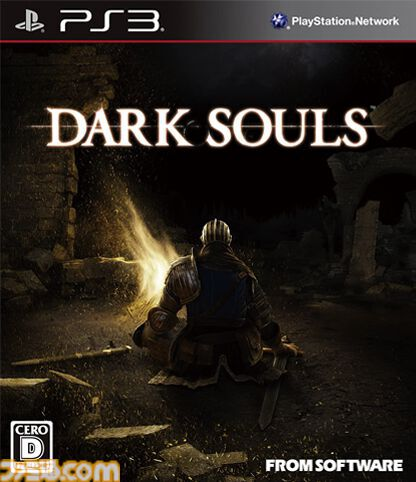
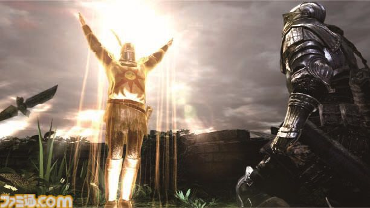

RT @famitsu: 【今日は何の日？】
2011年9月22日『DARK SOULS（ダークソウル）』が発売。今年で14周年
https://t.co/vIN7Fw4r5t
過酷な運命を切り開く高難度アクションRPG。“死にゲー”の地位を確固たるものにした人気シリーズの初…
2011年9月22日『DARK SOULS（ダークソウル）』が発売。今年で14周年
https://t.co/vIN7Fw4r5t
過酷な運命を切り開く高難度アクションRPG。“死にゲー”の地位を確固たるものにした人気シリーズの初…

